WXCC Widget Integration Lab
Lab Overview
In this hands-on lab, you will learn how to build a CTI (Computer Telephony Integration) connector using Webex Contact Center (WXCC) widgets. These powerful, embeddable widgets enable you to integrate contact center functionality into any web application — whether it's a custom portal, a CRM system like Salesforce or ServiceNow, or your own proprietary business applications.
What You'll Build:
- Custom CTI Connector - A fully functional contact center interface
- Agent Desktop - Login, status management, and profile information
- Call Controls - Answer, hold, mute, transfer, and end call capabilities
- Real-time Task Management - View and handle incoming interactions
- Screen Pop Integration - Display caller information and context
Time Required:
Approximately 60 minutes
Lab Objectives
By completing this lab, you will:
- Understand how to integrate WXCC widgets into a web application
- Learn how to authenticate agents using access tokens
- Implement various WXCC widgets step-by-step
- Test the integration with a live call scenario
Prerequisites
Before starting this lab, ensure you have:
- A computer with internet access
- A modern web browser (Chrome, Firefox, or Edge recommended)
- Visula Studio Code or any other code editor and basic familiarity with using a terminal/command prompt
- A phone to make test calls or Webex Desktop Application
Your Sandbox Credentials
These are your personal credentials for this lab:
Agent Credentials
User2 Credentials
Test Phone Number
Step 1: Verify Node.js Installation
Node.js is required to run the application. Let's verify it's installed on your machine.
1. Open your terminal/command prompt:
Select the terminal icon from the task bar and open it.2. Check Node.js version:
In the terminal, run the following command:Expected output: You should see something like v22.x.x
3. Check npm version:
In the terminal, run the following command:Expected output: You should see something like 9.x.x or 10.x.x
- Node.js is not installed
- Contact your lab instructor for assistance
Step 2: Clone the GitHub Repository
Now we'll download the lab code from GitHub.
1. Navigate to your desired directory:
Choose where you want to download the lab files. For example, in the terminal, run the following command:
2. Clone the repository:
In the terminal, run the following command:3. Navigate into the project folder:
In the terminal, run the following command:4. Verify the files are there:
In the terminal, run the following command:Expected output: You should see files and folders including package.json, src, public, etc.
Step 3: Install Project Dependencies
The application needs various software packages to run. Let's install them.
1. Run the install command:
In the terminal, run the following command:package.json file and installs all required packages.
2. Wait for installation to complete:
- This may take 2-5 minutes
- You'll see a progress bar and package names scrolling by
- Don't close the terminal window!
3. Installation is complete when:
- You see a message like
added XXX packages - You return to the command prompt
- No error messages appear in red
- Try running
npm install again- If errors persist, contact your instructor
Step 4: Start the Application
Now let's run the application for the first time!
1. Start the development server:
In the terminal, run the following command:2. Wait for the application to start:
- You'll see compilation messages
- The process may take 30-60 seconds
3. Application is ready when you see:
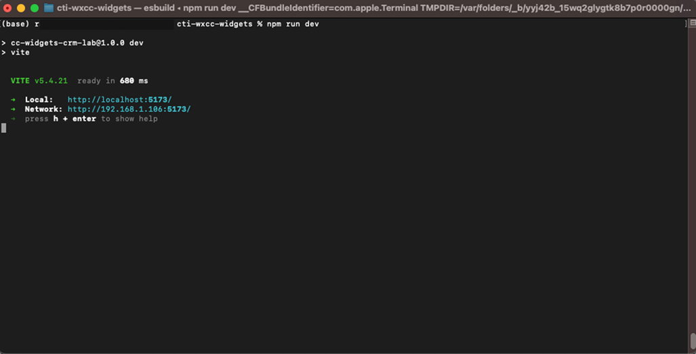4. Your browser should automatically open:
- If it doesn't, manually open your browser and go to: http://localhost:5173
5. You should see:
- A basic web application interface
- A login widget or placeholder area
- This is your starting point!
Step 5: Get Your Access Token (Agent Authentication)
To use WXCC widgets, you need an access token that proves you're an authorized agent.
5.1 Open Webex Developer Portal
- Open a new browser tab
- Navigate to: https://developer.webex.com
- Click "Log In" in the top-right corner
5.2 Login as Agent
- Enter your agent credentials:
- Email: [Your agent email from credentials section]
- Password: [Your agent password from credentials section]
- Click "Sign In"
5.3 Get Your Access Token
- Once logged in, you'll be on the developer dashboard
- Look for your avatar/profile icon in the top-right corner
- Click on it and find "Copy" next to your "Bearer" access token
- Click "Copy" to copy your access token
- The token looks something like:
YWFhYWFhYWFh...(very long string)
- The token looks something like:
- Do NOT share this token with anyone
- This token is valid for 12 hours
- Keep this browser tab open - you'll need to copy this token later as well
Step 6: Implement the Login Widget
Now we'll add the login functionality to your application.
6.1 Paste Your Access Token
- Go back to your application tab (http://localhost:5173)
- You should see a login widget with an input field labeled "Access Token"
- Paste your access token:
- Click in the access token input field
- Press
Ctrl+V(Windows/Linux) or right click and select "Paste" - You should see the long token string appear as dots
- Click the "Connect" button
6.2 Successful login:
- On successful login, you will see something like this
- Verify you copied the complete token (it's very long)
- Make sure there are no extra spaces before/after the token
- Verify you're logged in as the agent (not user2) on developer.webex.com
- Try copying the token again
Step 7: Implement Station Widget
Now we'll implement the Station Login widget, which allows agents to log into the Contact Center.
7.1 Open Visual Studio Code
- Open Visual Studio Code:
Select the Visual Studio Code icon from the task bar and open it.
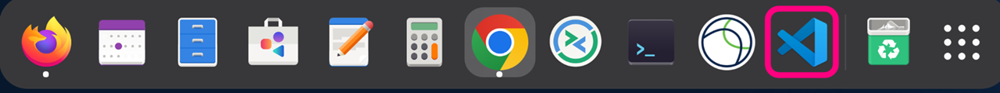
- Open the project folder:
- In VS Code: File → Open Folder
- Navigate to Desktop folder (or the folder you chose in Section 4) and select the
cti-wxcc-widgetsfolder (the one you cloned in Section 4) - Click "Select Folder"
- You should see the project structure in the left sidebar: 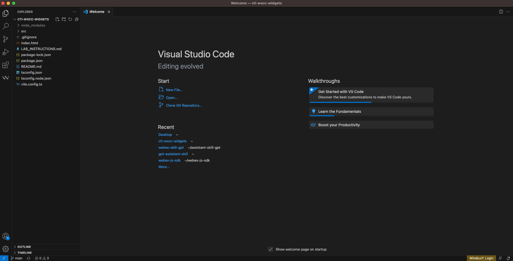
7.2 Implement Station Login Widget
Follow these steps to add the Station Login widget:
- Open the file
src/App.tsx- In VS Code, click on
srcfolder in the left sidebar - Click on
App.tsxto open it
- In VS Code, click on
- Find the TODO comment:
- Press
Ctrl+F(Windows/Linux) orCmd+F(Mac) to open search - Search for:
TODO: STEP 1 - STATION LOGIN WIDGET
- Press
- Replace the TODO comment with the Station Login widget code:
Copy the following code and paste it the App.tsx file where it says "TODO: STEP 1 - STATION LOGIN WIDGET"
{/* TODO: STEP 1 - STATION LOGIN WIDGET */} <StationLogin profileMode={false} onLogin={() => { setIsLoggedIn(true); console.log('Agent logged in successfully!'); }} onLogout={() => { setIsLoggedIn(false); console.log('Agent logged out'); }} /> - Save the file:
- Press
Ctrl+S(Windows/Linux) - Or click File → Save
- Press
7.3 Verify the Implementation
- Go back to your browser with the application running (http://localhost:5173)
- The page should automatically reload (hot reload feature)
- After connecting with your access token, you should see:
- The Station Login form appears in the CTI panel
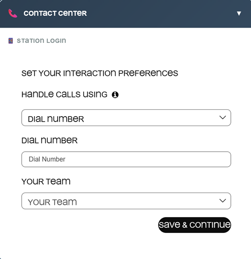
- Then:
- Select "Desktop" from the dropdown under "Handle Calls Using:"
- Under "Your Team" select the team it is showing in the dropdown
- Click on "Save & Continue" button
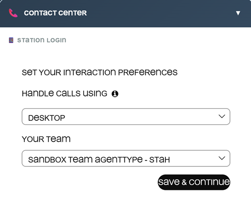
- You see "Agent logged in successfully!" in the browser console
- The Station Login form disappears or changes state
- Additional widgets or UI elements may appear
F5 or Ctrl+R)
- Check the browser console (F12 → Console tab) for error messages
- Verify you copied the code exactly as shown
- Make sure you saved the file after making changes
- Check that the application is still running in your terminal
Step 8: Implement User State Widget
Now we'll implement the User State widget, which allows agents to change their availability status.
8.1 Open the File
- In Visual Studio Code, open the file
src/App.tsx- If it's not already open, click on
srcfolder in the left sidebar - Click on
App.tsxto open it
- If it's not already open, click on
- Find the TODO comment:
- Press
Ctrl+F(Windows/Linux) orCmd+F(Mac) to open search - Search for:
TODO: STEP 2 - USER STATE WIDGET
- Press
8.2 Implement User State Widget
- Replace the TODO comment with the User State widget code:
Copy the following code and paste it the App.tsx file where it says "TODO: STEP 2 - USER STATE WIDGET"
{/* TODO: STEP 2 - USER STATE WIDGET */} <UserState onStateChange={(status: any) => { console.log('Agent state changed to:', status?.name); }} /> - Save the file:
- Press
Ctrl+S(Windows/Linux) - Or click File → Save
- Press
8.3 Verify the Implementation
- Go back to your browser with the application running (http://localhost:5173)
- The page should automatically reload (hot reload feature)
- After logging in with your station credentials, you should see:
- A Status dropdown appears in the CTI panel
- Various status options (Available, Meeting etc.)
- Change your status:
- Click on the Status dropdown
- Select "Available" to receive calls
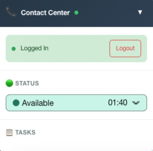
- You see "Agent state changed to: Available" (or the selected status) in the browser console
- The status dropdown is visible and functional
- You can change between different status options
- Check the browser console (F12 → Console tab) for error messages
- Verify you copied the code exactly as shown
- Make sure you saved the file after making changes
- Ensure you're logged in with your station credentials first
- Check that the application is still running in your terminal
Step 9: Implement Task List Widget
Now we'll implement the Task List widget, which shows incoming and active customer interactions.
9.1 Open the File
- In Visual Studio Code, open the file
src/App.tsx- If it's not already open, click on
srcfolder in the left sidebar - Click on
App.tsxto open it
- If it's not already open, click on
- Find the TODO comment:
- Press
Ctrl+F(Windows/Linux) orCmd+F(Mac) to open search - Search for:
TODO: STEP 3 - TASK LIST WIDGET
- Press
9.2 Implement Task List Widget
- Replace the TODO comment with the Task List widget code:
Copy the following code and paste it the App.tsx file where it says "TODO: STEP 3 - TASK LIST WIDGET"
{/* TODO: STEP 3 - TASK LIST WIDGET */} <TaskList onTaskAccepted={(task: any) => { console.log('Task accepted:', task); }} onTaskDeclined={(task: any, reason: any) => { console.log('Task declined:', task, 'Reason:', reason); }} onTaskSelected={({ task, isClicked }: any) => { setSelectedTask(task); console.log('Task selected:', task?.data?.mediaType); }} /> - Save the file:
- Press
Ctrl+S(Windows/Linux) - Or click File → Save
- Press
9.3 Verify the Implementation
- Go back to your browser with the application running (http://localhost:5173)
- The page should automatically reload (hot reload feature)
- After logging in with your station credentials, you should see:
- A Tasks section appears in the CTI panel
- The task list area is visible and ready to display incoming interactions
-
⚠️ Note: The widget won't appear until you have an active call, which we'll test in later steps
- But in the later steps, when you receive a call:
- The incoming call will appear in the Tasks section
- You'll see task information such as caller details and media type
- You can accept or decline the task from this list
- The Tasks section is visible in the CTI panel
- When a call arrives, it appears in the task list
- You can see task details and interact with incoming tasks
- Console messages appear when tasks are accepted, declined, or selected
- Check the browser console (F12 → Console tab) for error messages
- Verify you copied the code exactly as shown
- Make sure you saved the file after making changes
- Ensure you're logged in with your station credentials first
- Check that the application is still running in your terminal
- Verify that
setSelectedTask is defined in your component state
Step 10: Implement Call Control Widget
Now we'll implement the Call Control widget, which provides buttons to control active calls. It appears as a floating bar at the bottom-center during active calls.
10.1 Open the File
- In Visual Studio Code, open the file
src/App.tsx- If it's not already open, click on
srcfolder in the left sidebar - Click on
App.tsxto open it
- If it's not already open, click on
- Find the TODO comment:
- Press
Ctrl+F(Windows/Linux) orCmd+F(Mac) to open search - Search for:
TODO: STEP 4 - FLOATING CALL CONTROL WIDGET
- Press
10.2 Implement Call Control Widget
- Replace the TODO comment with the Call Control widget code:
Copy the following code and paste it the App.tsx file where it says "TODO: STEP 4 - FLOATING CALL CONTROL WIDGET"
{/* TODO: STEP 4 - FLOATING CALL CONTROL WIDGET */} {isLoggedIn && selectedTask && ( <div className="floating-call-control"> <div className="call-control-header"> <span className="call-indicator"></span> <span>Active Call</span> </div> <div className="call-control-content"> <CallControl onHoldResume={({ isHeld, task }: any) => { console.log(isHeld ? 'Call on hold' : 'Call resumed'); }} onEnd={({ task }: any) => { console.log('Call ended - waiting for wrapup'); }} onWrapUp={(params: any) => { console.log('Wrap up completed', params?.wrapUpReason); setSelectedTask(null); }} onToggleMute={({ isMuted, task }: any) => { console.log(isMuted ? 'Call muted' : 'Call unmuted'); }} onRecordingToggle={({ isRecording, task }: any) => { console.log(isRecording ? 'Recording started' : 'Recording stopped'); }} /> </div> </div> )} - Save the file:
- Press
Ctrl+S(Windows/Linux) - Or click File → Save
- Press
10.3 Verify the Implementation
- Go back to your browser with the application running (http://localhost:5173)
- The page should automatically reload (hot reload feature)
-
⚠️ Note: The widget won't appear until you have an active call, which we'll test in later steps
- When you have an active call (in later steps):
- The Call Control bar appears at the bottom-center of the screen
- You'll see an "Active Call" header with a call indicator
- Call control buttons are available (Hold, Mute, End Call, etc.)
- The widget stays visible during the wrapup phase after ending a call
- The code compiles without errors
- When you have an active call, the floating Call Control bar appears
- All call control buttons are functional
- Console messages appear when you interact with call controls
- The widget remains visible during wrapup phase
- Check the browser console (F12 → Console tab) for error messages
- Verify you copied the code exactly as shown
- Make sure you saved the file after making changes
- Ensure
isLoggedIn and selectedTask state variables are properly defined- Verify that
setSelectedTask is defined in your component state- Check that the application is still running in your terminal
- Note: The widget won't appear until you have an active call, which we'll test in later steps
Step 11: Prepare for Call Testing
Now let's set up to receive and handle a test call!
11.1 Open Webex App (user2)
- Click on the More Apps icon in the taskbar 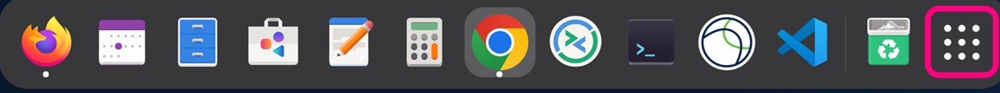
- Search for Webex App and click on it
- Login with USER2 credentials:
- Email: [Your user2 email from credentials section]
- Password: [Your user2 password from credentials section]
- Wait for Webex to fully load:
- You should see the main Webex interface
- Calling features should be available
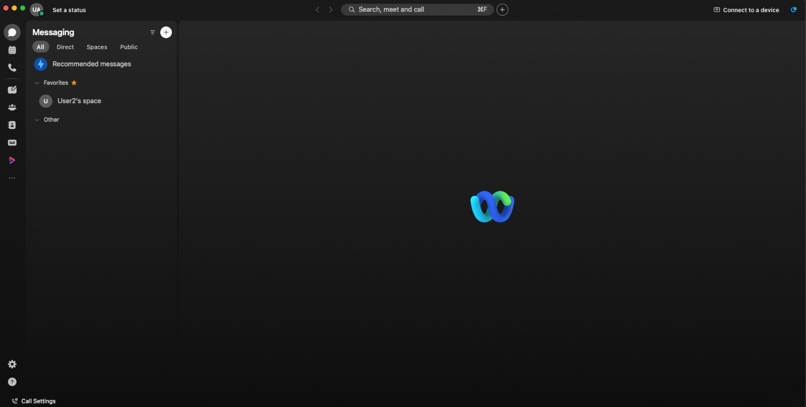
Step 12: Make a Test Call
This is the moment of truth! Let's test the complete integration.
12.1 User2 Places the Call
- In the Webex App (logged in as user2):
- Find the calling/dial pad feature:
- Look for a phone icon or "Call" button
- Click to open the dial pad
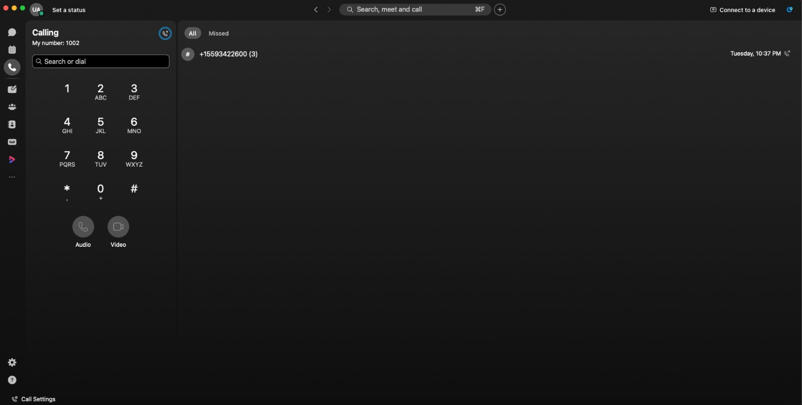
- Dial the test number:
- Enter the number provided by your instructor
- Number: [From your credentials section]
- Click "Call" or press the call button
- Wait for the call to connect:
- You should hear ringing or a queue message
- The call is being routed to your agent
12.2 Agent Receives the Call
- Switch to your custom application (http://localhost:5173)
- Watch for incoming call notification:
- You should see a call notification appear
- The Task List widget should show a new task
- You might hear a ringing sound (if audio is implemented)
- The caller's information should display
- Call information you should see:
- Caller ID or phone number
- Call queue information
- "Answer" button
- "Decline" or "Reject" button
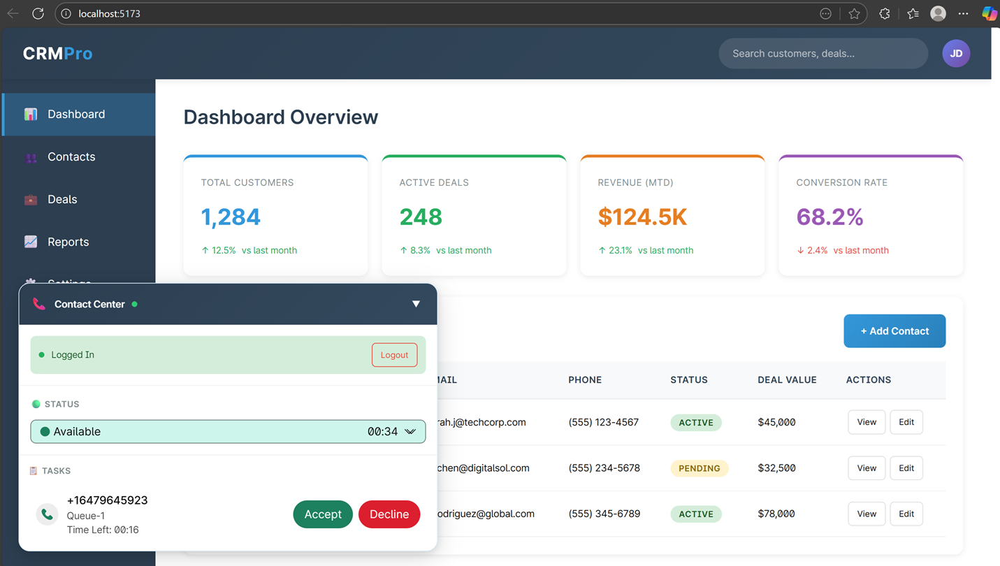
12.3 Answer the Call
- Click the "Answer" button in your custom application
- Call should connect:
- Call status changes to "Engaged"
- Call timer starts counting
- Call control buttons become active (Hold, Mute, Transfer, etc.)
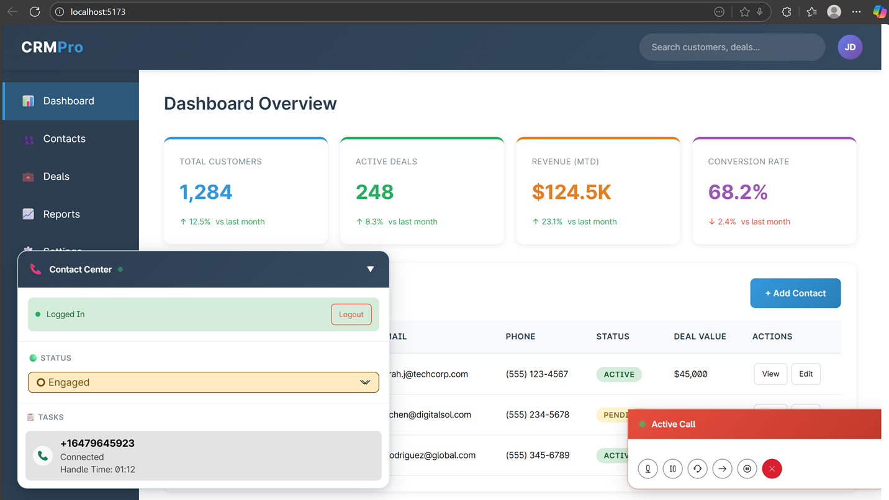
- Test the audio:
- Speak into your computer microphone
- Listen through your computer speakers/headphones
- The user2 (in Webex App) should hear you
- You should hear the user2
- Check your browser permissions for microphone/speaker access
- Check system volume settings
- Try refreshing the page and answering again
Congratulations!
You have successfully completed the Webex Contact Center Widget Integration Lab!
What You Accomplished:
- ✅ Cloned and set up a WXCC integration project
- ✅ Authenticated as a Webex Contact Center agent
- ✅ Implemented multiple WXCC widgets step-by-step
- ✅ Received and handled live calls in a custom application
- ✅ Tested call controls and agent features
Additional Resources
- Webex Contact Center Documentation: https://developer.webex.com/docs/contact-center
- WXCC Widget Reference: https://developer.webex-cx.com/documentation/
- GitHub Repository: https://github.com/wxsd-sales/cti-wxcc-widgets
- Webex Developer Portal: https://developer.webex.com
Feedback
Did you enjoy this lab? Have suggestions for improvement?
Contact: rkanthet@cisco.com
Cleanup (After Lab)
When you're done with the lab:
- Stop the application:
- Go to the terminal where
npm startis running - Press
Ctrl+Cto stop the server
- Go to the terminal where
- Close applications:
- Close the Webex App
- Close browser tabs
- Optional - Delete project files:
cd .. rm -rf cti-wxcc-widgets
Last Updated: February 2026
Estimated Time: 60 minutes